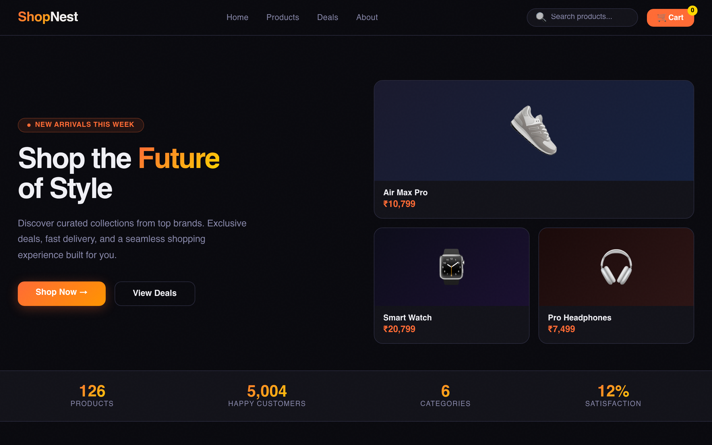
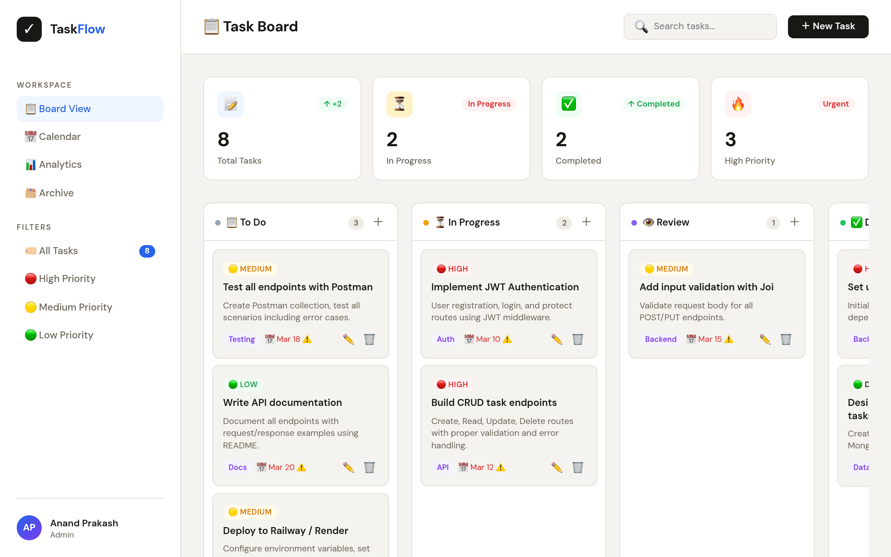
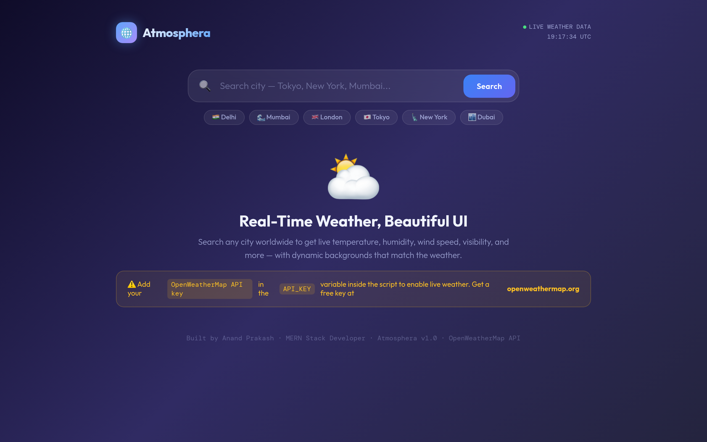

Master of Computer Applications
G.L. Bajaj Institute of Technology and Management · Expected graduation in 2026.
I design and build full-stack products with polished UI/UX, practical backend architecture, and recruiter-friendly engineering depth. This version adds stronger above-the-fold energy, clearer calls to action, visual project previews, real certificate links, and FAANG-style case studies that show how I think about scale.
I want recruiters to see not only what I built, but also how I think about scale, tradeoffs, and product quality.
I am Anand Prakash, an MCA student graduating in 2026, focused on building web experiences that combine clear interaction design, resilient backend APIs, and thoughtful product structure.
My strongest interest is in full-stack product engineering: turning user needs into interfaces that feel simple, then backing them with authentication, business logic, persistence, and deployable architecture.
For FAANG-style roles, I want this portfolio to communicate three things clearly: I can ship features, I can explain tradeoffs, and I can grow into larger-scale system work quickly.
G.L. Bajaj Institute of Technology and Management · Expected graduation in 2026.
I enjoy creating interfaces that feel polished while also structuring backend flows cleanly enough to scale and maintain.
I am actively looking for internships and full-time opportunities where I can contribute fast and deepen system design skills.
Recruiters and interviewers usually look for more than a clean landing page. They want evidence of ownership, technical depth, and product judgment.
This version emphasizes real project links, impact-driven framing, scale-minded case studies, and proof of continuous learning so the page feels more job-ready in a fast 10-to-15 second scan.
I am strongest when building an end-to-end product flow: interface, API layer, validation, storage, and deployment.
Your original project content was solid. I upgraded presentation so each project feels more visual, faster to scan, and easier to trust.

Full-stack shopping experience with catalog browsing, cart flow, authentication, and order-ready architecture using the MERN stack.

API-first project focused on authentication, CRUD operations, validation, and maintainable backend structure for task workflows.

Responsive weather interface that transforms third-party API data into a clean search experience for quick decision-making.
These are intentionally framed as high-signal case study ideas for stronger interview conversations. They show how I think about product scope, architecture, and engineering tradeoffs at a larger scale.
A Netflix-style internal analytics dashboard for trending content, cohort retention, and recommendation quality signals across regions.
A recruiter and candidate workflow platform with scheduling, interviewer panels, evaluation forms, and structured feedback pipelines.
An internal operations console for tracking order failures, payment anomalies, fulfillment delays, and customer support escalation paths.
Instead of making recruiters dig for proof, this section makes the strongest signals visible in one place.
Live demos and source links make your portfolio feel verifiable instead of theoretical.
The page now explains why your work matters, not only what technologies you used.
Case studies, architecture language, and stronger storytelling help position you above a typical fresher portfolio.
Even as a fresher, timeline storytelling helps recruiters understand growth, direction, and consistency.
Built confidence with core programming, frontend structure, and problem solving while learning how browsers and APIs work together.
Moved into React, Node.js, Express, and MongoDB to build applications that demonstrate authentication, data flow, and real user interaction.
Now focusing on portfolio depth, cleaner product thinking, and larger-scale case studies that fit stronger hiring conversations.
Each card now includes a direct document link so recruiters can open the certificate immediately instead of seeing only a list of names.
Strong foundational exposure to Kotlin syntax, problem solving, and modern programming concepts.
Cross-platform mobile development exposure that complements my React-based frontend thinking.
Focused learning around component-driven UI, state management, and modern frontend development patterns.
Helpful perspective on product communication, user targeting, and growth-focused digital thinking.
Useful exposure to data-scale concepts that support my longer-term interest in backend and systems work.
Strengthened backend fundamentals by learning server-side application structure from a different stack perspective.
Helped reinforce how data modeling and backend logic connect to user-facing application behavior.
Reinforces security awareness, which supports stronger application design and more responsible engineering decisions.
I did not fake a real backend chatbot here, but I added a credible UI concept so the portfolio signals product imagination without pretending unsupported functionality.
I am looking for internships, entry-level software roles, and product engineering opportunities where I can contribute across frontend, backend, and full-stack delivery.
If you want a candidate who cares about clean UI, reliable APIs, and thoughtful growth into larger systems, I would love to connect.